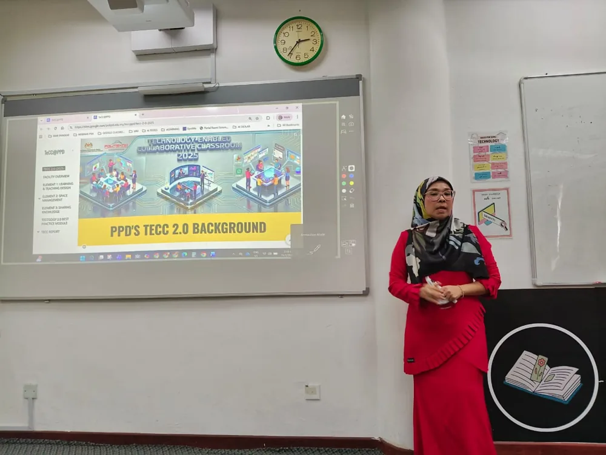
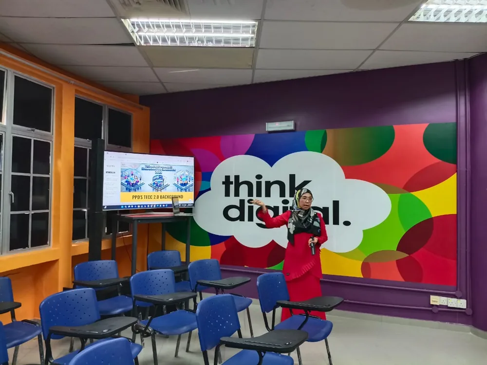

Tatacara / SOP
Rujukan garis panduan TECC 2.0 tersedia. Status SOP semasa dan versi berkuat kuasa perlu disahkan.
TECC 2.0 memfokuskan PdP berjadual, kolaborasi pelajar dan aktiviti akademik serta ko-kurikulum.
Sumber: jadual waktu dan e-Booking JPA. Lihat Bukti & Lampiran ↗
TECC 2.0 menggunakan dua kaedah: PdP berjadual dan penggunaan berkala di luar jadual. Hanya tempoh yang tidak bertindih boleh dijumlahkan sebagai jam penggunaan tambahan.
| Tarikh | Nama aktiviti | Bil peserta | Ringkasan / status | Bukti |
|---|
| Bulan | PdP berjadual | Tempahan tambahan | Aktiviti | Bukti Drive |
|---|



Rujukan bukti penuh: Google Sites TECC. Lihat Bukti & Lampiran ↗

Rujukan garis panduan TECC 2.0 tersedia. Status SOP semasa dan versi berkuat kuasa perlu disahkan.
Jabatan Pengajian Am / penyelaras TECC — nama pegawai semasa perlu disahkan.
Rekod pemeriksaan, aduan peralatan dan tindakan penyelenggaraan perlu dilampirkan.
TECC 2.0 Guideline Final ↗
Panduan operasi dan modul pendidik: lihat lampiran ↗
Nyatakan saluran penyebarluasan yang digunakan untuk berkongsi aktiviti sebenar, disertakan bukti pautan atau tangkap layar rasmi.
Pautan artikel aktiviti perlu diisi selepas disahkan.
Pautan siaran rasmi perlu diisi selepas disahkan.
Rekod komunikasi dalaman perlu dipilih mengikut kesesuaian.
Laporan 2025 dikekalkan di sini. Tambah bahagian 2026 mengikut arahan penyelaras.